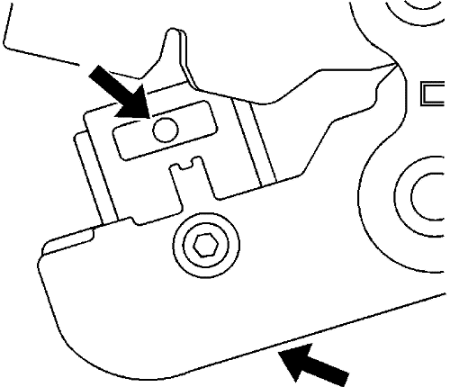

Conectores Delphi 12 vías
Herramientas especiales
Si desea informarse sobre herramientas regionales equivalentes, consultar Herramientas especiales .
Procedimiento de desmontaje
Siga el orden de los pasos indicados más abajo para extraer los terminales del conector.
- Sitúe el bloqueo de la palanca en la tapa del cable. Extraiga el seguro de posición del conector (CPA) y deslice el bloqueo de la palanca alejándolo del cuerpo del conector.
- Separe el conector del componente.
- Sitúe las lengüetas de bloqueo de la tapa sobre la tapa del conector. Mediante una herramienta pequeña de punta plana, suelte todas las lengüetas de bloqueo.
- Suelte la lengüeta de bloqueo de la tapa de cable inferior.
- Suelte la lengüeta de bloqueo de la tapa de cable superior.
- Una vez que se hayan desbloqueado los bloqueos, levante la tapa.
Nota: Tenga siempre cuidado al extraer un seguro de posición de terminal (TPA) para evitar dañarlo.
- Extraiga el TPA introduciendo una herramienta pequeña de punta plana en las lengüetas de bloqueo de los dos lados del TPA. Levante con cuidado el TPA fuera del conector.

- Extraiga la pieza frontal introduciendo una herramienta pequeña de punta plana en las lengüetas de bloqueo de los dos lados de la pieza frontal. Separe con cuidado la pieza frontal fuera del conector.
- Introduzca la herramienta EL-38125-12A para soltar los terminales introduciendo la herramienta en la cavidad de liberación de terminal.
- Mientras mantiene en su sitio la herramienta de desmontaje, retire con cuidado el cable de la parte trasera del conector. Recuerde siempre que nunca debe utilizar la fuerza a la hora de retirar un terminal de un conector.
Procedimiento de reparación de terminales
Los conectores Micro-Pack 100W disponen de pequeños terminales difíciles de manejar y sujetar al engarzarlos. A fin de ayudar al técnico a engarzar estos terminales, se ha desarrollado una nueva herramienta engarzadora. La herramienta engarzadora J 38125-101 (mordaza W) se ha desarrollado para engarzar los terminales Micro-Pack 100W. La herramienta engarzadora J 38125-101 (mordaza W) dispone de un bloque de sujeción del terminal que sujetará el terminal en posición durante su engarzado. Una vez retirado el terminal del conector, realice el siguiente procedimiento para reparar los terminales Micro-Pack 100.
- Corte el cable tan cerca del terminal como sea posible.
Nota: Tras cortar el terminal dañado del cable, determine si el cable restante es suficientemente largo como para alcanzar el conector sin aplicar tensión sobre el cable. Si el cable no fuera suficientemente largo, empalme un pequeño trozo de cable de igual sección al cable existente y, a continuación, engarce el nuevo terminal en el cable añadido.
- Pele 5 mm (3/16 pulg.) de aislamiento del cable.

- Presione el localizador accionado por muelle de la herramienta engarzadora J 38125-101 (mordaza W) hasta que la herramienta de retención del terminal sea completamente visible.

- Introduzca el terminal en la herramienta engarzadora hasta que las aletas del núcleo estén enrasadas con el yunque de la herramienta engarzadora. Asegúrese de que las aletas apunten hacia el molde de la herramienta engarzadora y libere el localizador de muelle. El localizador sujetará el terminal en posición. Inspeccione la alineación de las aletas del terminal con el molde de la herramienta engarzadora. Si las aletas del terminal son más anchas que el molde de la herramienta engarzadora, retire el terminal y doble ligeramente las aletas del terminal.
- Coloque el cable desnudo en el terminal.
- Engarce el nuevo terminal en el cable. Si se produce una obstrucción, presione el mecanismo de liberación de emergencia para abrir el aplicador.
Reparación de cable con terminación
- Extraiga el terminal.
- Encuentre el cable con terminación adecuado.
- Utilice los casquillos de empalme adecuados en función del tamaño.
- Consultar Empalme de hilos de cobre usando casquillos de empalme .
| © Copyright Chevrolet. Reservados todos los derechos |